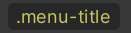

Styling USS selectors with UI Builder
Manage USS Selectors
Unity style sheet (USS) Selectors are queries into the element hierarchy. They look like this in USS:
.my-button {
background-color: blue;
}
The above USS Selector looks for all elements that have the class or tag .my-button and any matching elements will get the background color blue.
You can use USS Selectors inside StyleSheets to share styles across elements and UI(User Interface) Allows a user to interact with your application. Unity currently supports three UI systems. More info
See in Glossary Documents (UXML). You can create a new USS Selectors through the Add new selector… field at the top of the StyleSheets pane.
When you have the Add new selector… field in focus, a USS Selector syntax reference appears on top of the ViewportThe user’s visible area of an app on their screen.
See in Glossary, as shown in the image below:
Manipulate USS selectors
To cut/copy/paste/delete one or more USS Selectors in the StyleSheets pane, select the group, right-click, and choose the desired action.
When you copy a USS Selector in the StyleSheets pane, what actually gets copied to the copy/paste buffer is the USS text representation of the USS Selector. This means you can paste it in a text editor directly or, the opposite, copy some USS text and paste it in the UI Builder.
Matching USS Selectors to elements
It’s recommended to use style classes to match elements instead of their C# type or name attribute. The image below displays the StyleSheets pane containing USS style class labels:

You can have a USS Selector match an element by adding a style class (or “tag”) used in the USS Selector to the element. You can add a style class to an element in two ways:
- Drag a style class label, like , onto the element in either the Hierarchy or the Canvas.
- Select the element and enter the name of the style class in the field at the top of the StyleSheet section in the InspectorA Unity window that displays information about the currently selected GameObject, asset or project settings, allowing you to inspect and edit the values. More info
See in Glossary. - Click the Add Style Class to List button:

To see what style classes are already applied to an element, look at the yellow style class labels in the StyleSheet section of the Inspector:
You can double-click on a yellow style class labels to jump to a USS Selector that uses it as its only query, if one exists in the attached StyleSheets.
If a yellow style class label appears faded, the UI Builder couldn’t find a USS selector in the attached StyleSheets that contains this class in its query. You can double-click on a faded yellow class label to create a new USS selector in the Active StyleSheet that looks for this style class.